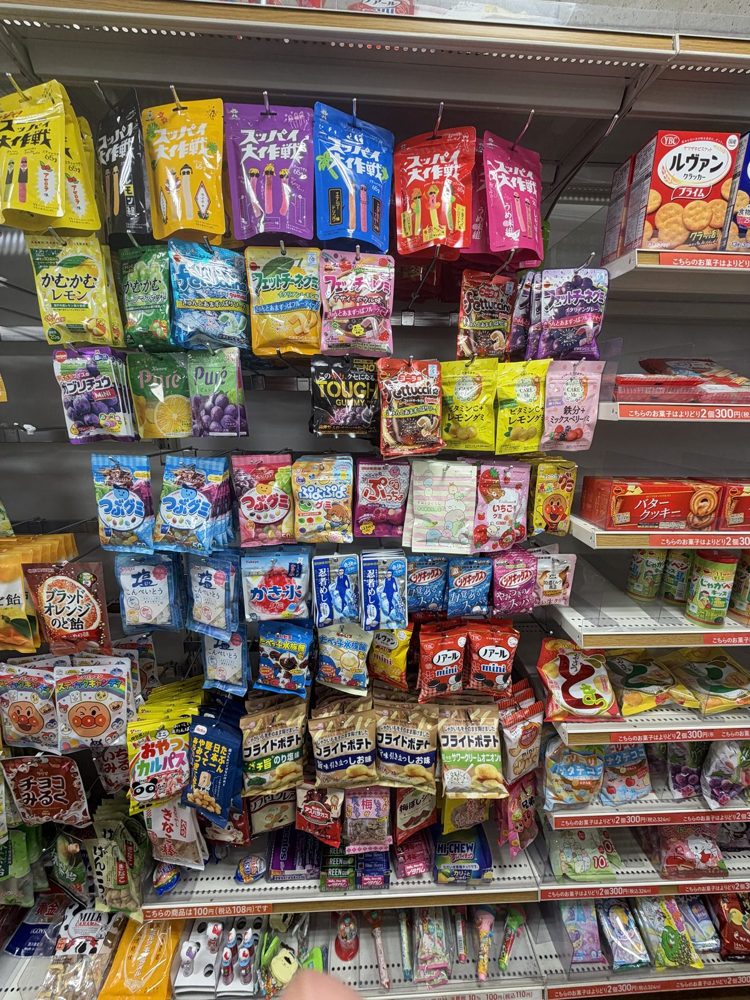
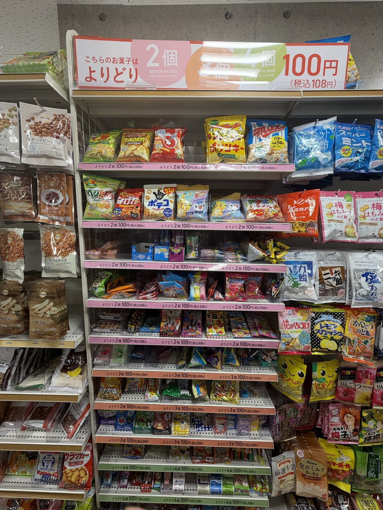
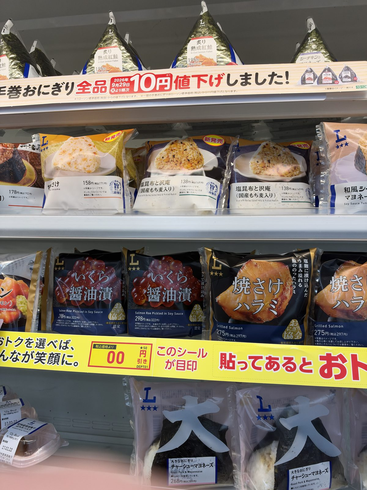
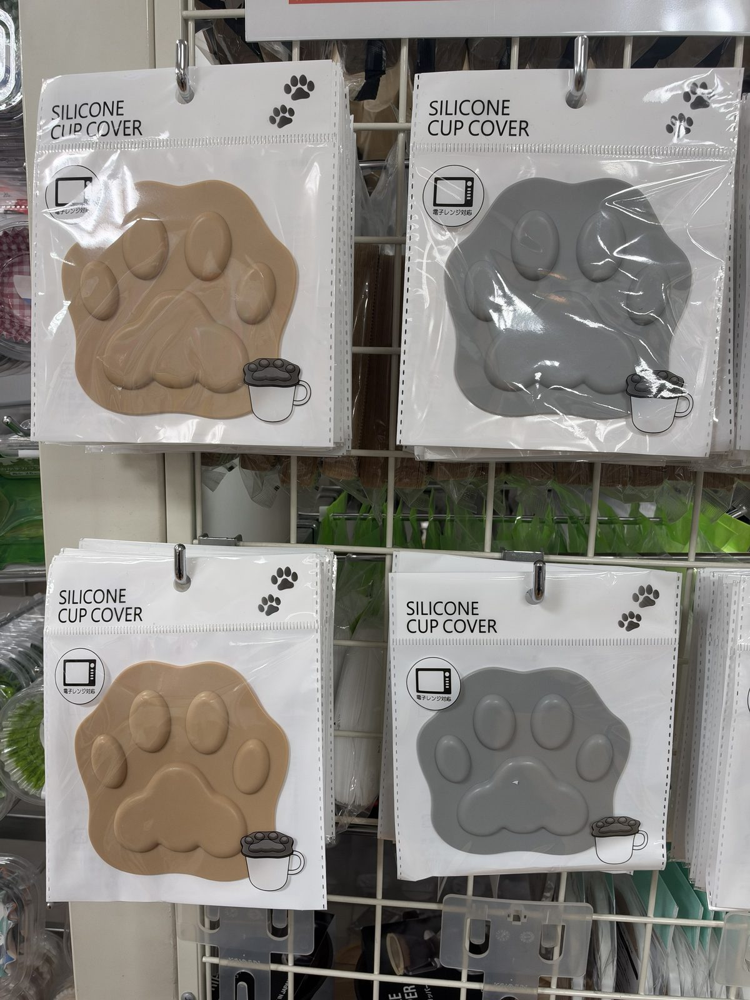
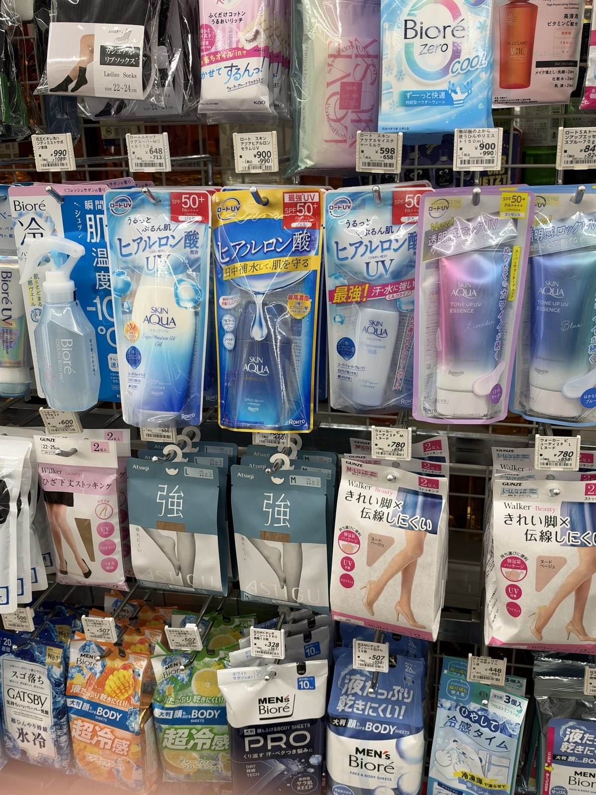
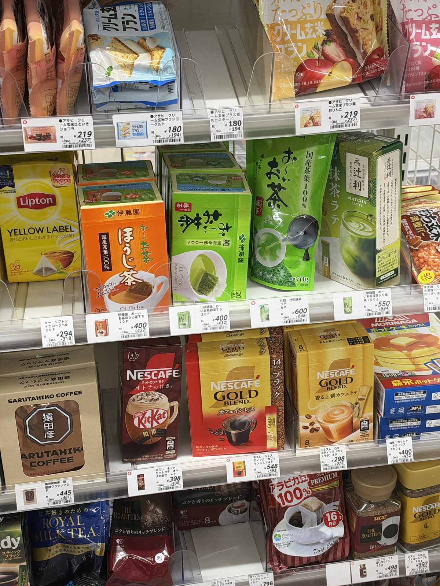
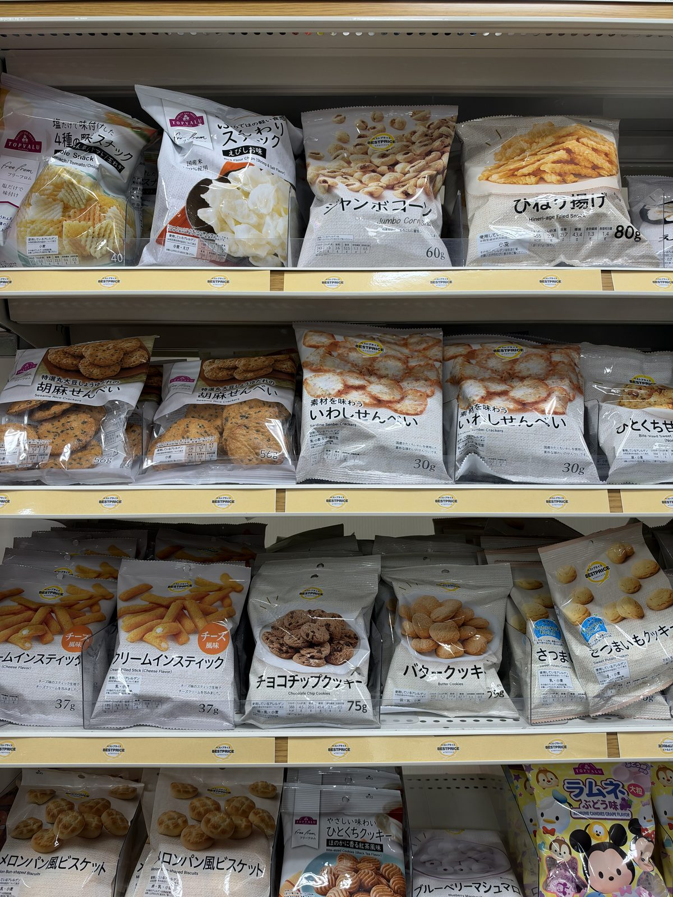

What to Buy in Japan
Real shopping tips from Japan: konbini snacks, 100-yen shop finds and drugstore beauty. What to grab on your trip, and how to order it once you are home.

ON YOUR TRIP What to buy at konbini, 100-yen shops and drugstores Plus what customs will not let you take home, country by country. FOOD HALLS
Depachika: the department store food floor
Boxed sweets that travel, bento, and the new tax-free receipt rule.
FOOD HALLS
Depachika: the department store food floor
Boxed sweets that travel, bento, and the new tax-free receipt rule.
 CHARACTER GOODS
Gachapon, figures and crane games
What a turn costs now, and what to do with the capsules.
CHARACTER GOODS
Gachapon, figures and crane games
What a turn costs now, and what to do with the capsules.

FROM 1 NOVEMBER 2026 Tax-free shopping is changing Refunds after departure, the 90-day rule, and one receipt, all or nothing.
CONVENIENCE STORES Konbini snacks, prices and what survives the flight Nine snacks with yen prices, a 500-yen breakfast, and the chains compared.
100-YEN SHOPS Daiso, Seria and Can Do compared Fifteen finds under 110 yen, plus stationery, beauty tools and kitchen tools.
DRUGSTORE BEAUTY How to shop the beauty aisle without reading Japanese The package words to translate, a 4,000-yen routine, and sunscreen facts.
AFTER YOUR TRIP How to order the same things from home Boxes, Japanese shops that ship, and proxy buying compared.
FREE PRINTABLE The Japan Shopping List One page to fold into your passport.